Se encuentra en la región de la torre de Tabanta, pero solo podrás completarlo después de haber derrotado a la bestia divina de esta zona. Además, tendrás que completar una Prueba heroica (Las hermanas cantoras), para activarla debes ir donde se encontraba Kumeli (misión secundaria ¡Busca a Kumeli!). Mira las siguientes fotos para ver la localización exacta de Kumeli, aunque todavía no tendrás el santuario disponible como se ve en ellas.
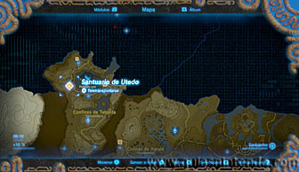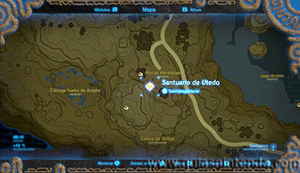
Habla con Kumeli y te pedirá que busques a sus hermanas.
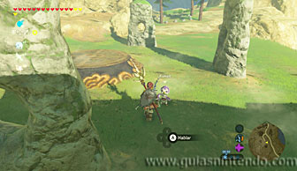
Regresa al Poblado orni y búscalas.
Sogeli está en la tienda (donde puedes comprar manteca y
trigo de Tabanta si lo necesitas). Te dará la manteca al hablar con ella.
Notali, está en un saliente en la montaña que hay en el centro del Poblado
orni. Puedes subir escalando o usar el poder que te otorga la bestia divina. Debajo del
saliente está situado el santuario, así que es fácil orientarse.
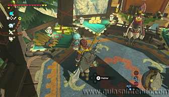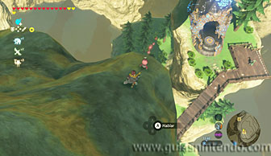
Kotolo, se encuentra en un pequeño lago a la entrada del poblado, ahí puedes
conseguir un salmón vivaz.
Genali está junto a la cacerola del poblado y te dirá que quiere salmón
con salsa. Necesitas el trigo de Tabanta, la manteca y salmón
vivaz para hacerlo, si has encontrado a sus hermanas tendrás todos los ingredientes. Cocínalo y habla con ella para dárselo.
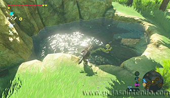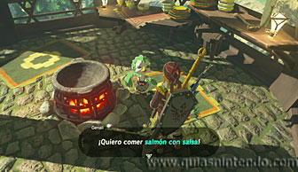
Ahora regresa para hablar con Kumeli y verás a todas las hermanas reunidas y cantando.
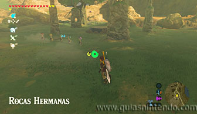
Ahora tendrás que colocarte en el centro del pedestal e ir lanzando aire (con una hoja kolog) hacia las estatuas, pero debes hacerlo en un orden determinado. El orden es el siguiente (fíjándote en el número de dedos que tienen sobre ellas independientemente de su posición): 4, 5, 3, 1, 2. Si lo haces correctamente se completará la Prueba heroica y aparecerá la entrada al santuario.
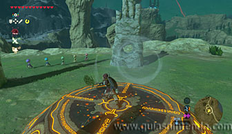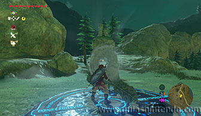
Ahora podrás entrar al santuario sin problemas. Lo primero que tendrás que hacer es subir una larga escalera de mano.
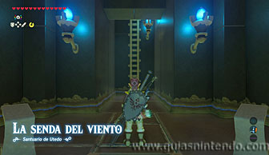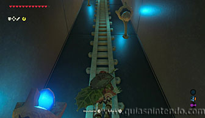
Arriba verás un interruptor y al activarlo se abrirá una trampilla. Salta por ella y ve la zona central de la gran sala con lava.
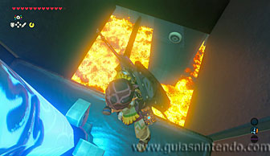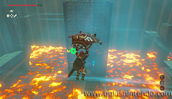
Ahí se encuentra la entrada al altar, aunque está cerrada y necesitas una llave. Gira a tu izquierda (con la puerta frente a ti) y salta hacia la lava sacando rápidamente la paravela. Con ayuda de la corriente de aire llegarás a otra plataforma.
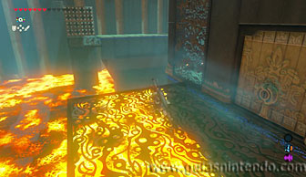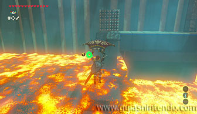
Sigue avanzando y usa la corriente de aire que te eleva para poder seguir avanzando. Arriba puedes volver a saltar hacia la lava para planear y poder avanzar. Sin embargo, tendrás que guardar la paravela en el aire y volverla a sacar para poder pasar sin chocarte con los pinchos del camino. Así podrás llegar a otra plataforma, esta vez encontrarás un cofre que contiene la llave de la puerta del altar.
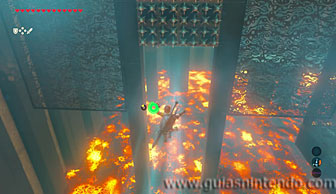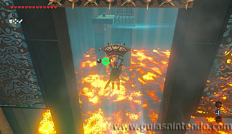
Sigue planeando hacia el único lado posible siguiendo la corriente y esquiva los pinchos. Ahora verás unos ventiladores que te llevan hacia el altar, pero si quieres encontrar el segundo cofre sigue recto y sube la rampa que hay después.
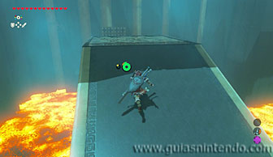
Desde ahí podrás saltar a la plataforma del cofre. Ten cuidado porque si no sueltas la paravela a tiempo el aire te arrastrará y si lo haces pronto caerás a la lava. Dentro del cofre encontrarás una Espada de fuego. Sigue la corriente y al subir otra pequeña rampa podrás usar una nueva corriente para llegar a la zona por donde ya has pasado, antes de llegar subir la rampa para coger el segundo cofre.
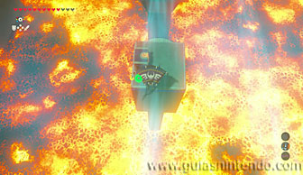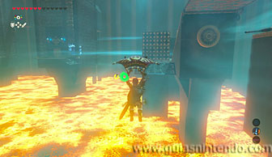
Desde aquí puedes usar los ventiladores que hay para llegar a la puerta del altar.
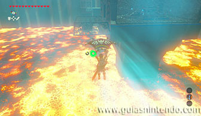
Ahora lo único que te queda es dirigirte al altar para conseguir el símbolo de valía correspondiente.
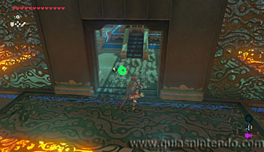